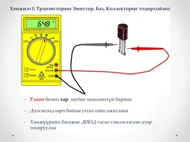

Transistor гэж юу вэ, хэрхэн ажилладаг вэ Трантристор гэдэг нь бага гүйдэл , гүйдэлтэй их гүйдэл буюу хүчдэлийг хянахын тулд хэлхээн дэх электрон элемент юм. Энэ нь цахим төхөөрөмжүүд дээр өргөн хэрэглэгддэг цахилгааны дохио, хүч чадлыг нэмэгдүүлж эсвэл өөрчлөх (засах) ашиглаж болно гэсэн үг юм. Энэ нь хагас дамжуулагчийн хооронд хагас дамжуулагчийг гадагшлуулах замаар хийдэг. Гүйдэл нь ихэвчлэн өндөр эсэргүүцэлтэй (өөрөөр хэлбэл, резистор ) материалд дамжих тул энэ нь "дамжуулагч-эсэргүүцэл" эсвэл транзистор юм.
Үндсэн Point-Холбоо барих Transistor Structure Үндсэн дамжуулагч транзисторууд, npn транзистор болон pnp транзистор гэсэн хоёр үндсэн төрлүүд байдаг бөгөөд энд n ба p нь сөрөг, эерэг байна. Хоёр хоёрын хоорондох ялгаа нь хэвийсэн хүчдэлийн тохируулга юм. Транзистор хэрхэн ажилладагийг ойлгохын тулд хагас дамжуулагчид цахилгаан эрчим хүчинд хэрхэн хариу үйлдэл үзүүлэхийг ойлгох хэрэгтэй. Зарим хагас дамжуулагчид n- төрөл, эсвэл сөрөг байдаг бөгөөд энэ нь эерэг байдалд чиглэсэн сөрөг электродоос (эерэг утгаар холбох зай гэж хэлдэг) материалын чөлөөт электрон байна гэсэн үг юм. Бусад хагас дамжуулагч нь p- type байх бөгөөд электрон тохиолдолд электрон цооногуудад "нүх" -ийг дүүргэх бөгөөд энэ нь эерэг тоосонцор эерэг электродоос сөрөг электрод руу шилжиж байгаа мэт ажиллах ёстой гэсэн үг юм. Энэ төрөл нь хагас дамжуулагч материалын атомын бүтцээр тодорхойлогддог.
1948 оноос хойш транзисторын төрөл бүрийн төрлүүд байдаг. Транзисторуудын янз бүрийн төрлүүдийн жагсаалт (заавал биш) Bipolar уулзвар транзистор (BJT) Талбайн нөлөөллийн транзистор (FET) Тасралтгүй транзистор Транзисторыг олгодог Хос-хаалга FET Авианы транзистор Нимгэн кино транзистор Darlington транзистор Баллистик транзистор FinFET Хөвөгч хаалга транзистор Урвуу Т-тын транзистор Spin транзистор Фото транзистор Тусгаарлагч хаалга давхар транзистор Нэг электрон транзистор Nanofluidic транзистор Триних транзистор (Intel загвар) ION-мэдрэмжтэй FET Хурдан-урвуу эпитексal диод FET (FREDFET) Electrolyte-Oxide-Хагас дамжуулагч FET (EOSFET)
Транзистор судлах хичээл
